RTES913 - EOS - Raspberry Pi 3 or 4
Lab 0: Setting up your Raspberry Pi
Prepare the Ubuntu VM, flash Raspberry Pi OS, configure networking, and connect to the board through SSH.
Purpose
Lab 0 makes sure the development machine, Ubuntu virtual machine, and Raspberry Pi can communicate reliably before kernel development begins. Students who already use Ubuntu 22.04 LTS directly can skip the VirtualBox setup and continue with the Raspberry Pi steps.
Required downloads
1. VirtualBox
Install VirtualBox on the host computer, then create an Ubuntu 22.04 LTS VM. During Ubuntu installation, choose English as the installation language.
| Setting | Recommended value |
|---|---|
| ISO image | ubuntu-22.04.5-desktop-amd64.iso |
| Unattended installation | Leave Proceed with Unattended Installation (以無人值守安裝繼續) unchecked; otherwise the terminal may not open correctly. |
| Memory | At least 4 GB (4096 MB) |
| CPU | At least 1 processor; the example uses 4. More processors make compiling faster. Stay inside the green part of the slider. |
| Virtual disk | At least 20 GB, VDI format |
Create the VM
- In VirtualBox, choose New (新增).
- Under Name and Operating System, enter a VM name and select the Ubuntu 22.04.5 ISO. Leave unattended installation unchecked.
- Under Hardware, set the memory and CPU count.
- Under Hard Disk, create a new virtual hard disk of at least 20 GB.
- Choose Finish (完成).
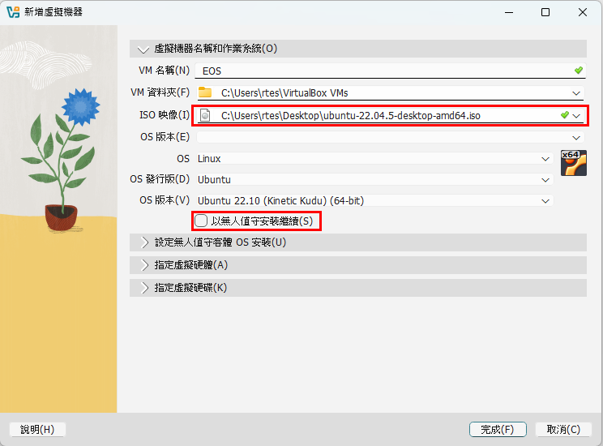
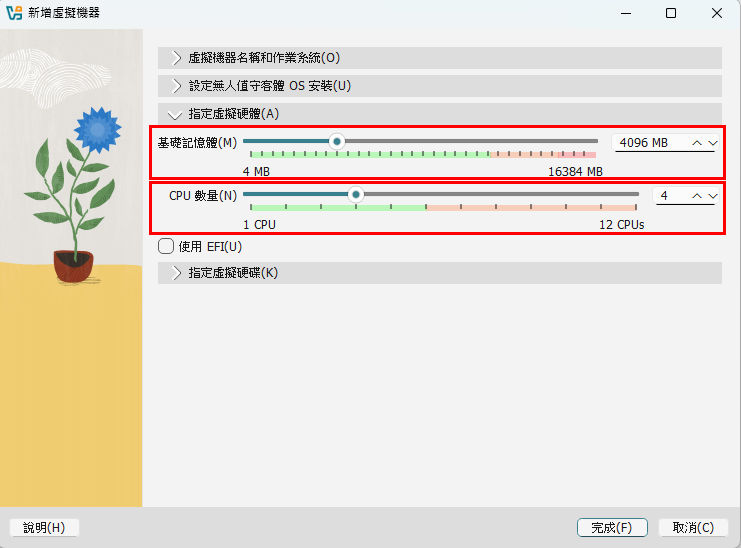
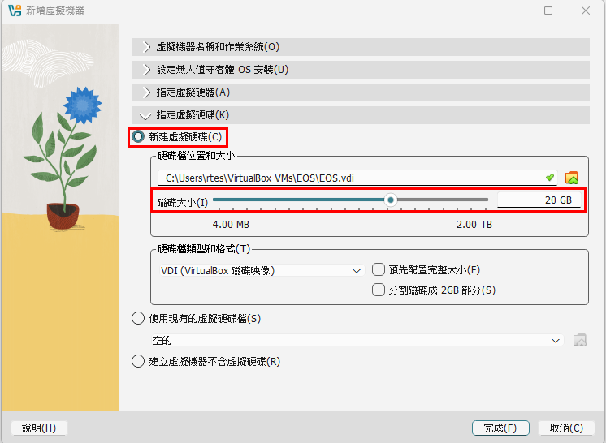
Install Ubuntu
Start the VM. When the GRUB menu appears, choose Try or Install Ubuntu, then follow the installer.
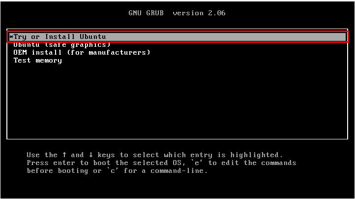
Remove the installation ISO
After installation, shut down the VM and open Settings (設定) → Storage (儲存體). Right-click the Ubuntu ISO under Controller: IDE and choose Remove Attachment (移除附件). The VM then boots from its virtual disk instead of the installer.
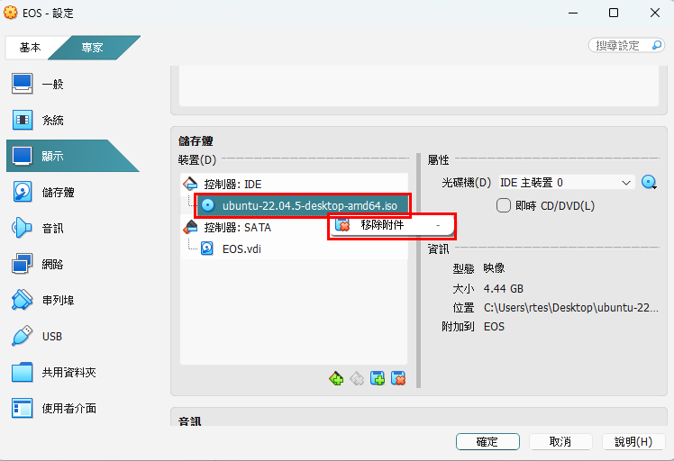
2. Raspberry Pi Imager
Download and install Raspberry Pi Imager from the official Raspberry Pi website. This tool writes Raspberry Pi OS to the SD card and lets you set account, network, locale, and SSH options before booting.
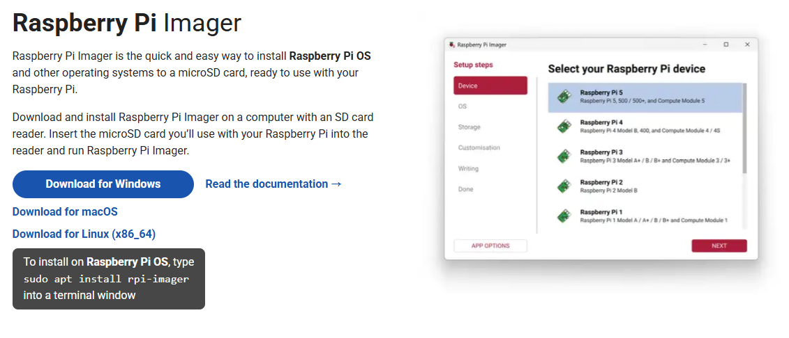
3. Flash Raspberry Pi OS
- Insert the SD card into the computer with a card reader, then open Raspberry Pi Imager.
- Device (设备): choose your board, Raspberry Pi 4 or Raspberry Pi 3, then choose Next (下一步).
- Operating System (操作系统): choose Raspberry Pi OS (Legacy, 64-bit), described as A port of Debian Bookworm with security updates and desktop environment. Scroll down to find it, or open Raspberry Pi OS (other) if it is not in the top-level list.
- Storage (储存设备): select the SD card. Keep Exclude system drives (排除系统驱动器) checked.
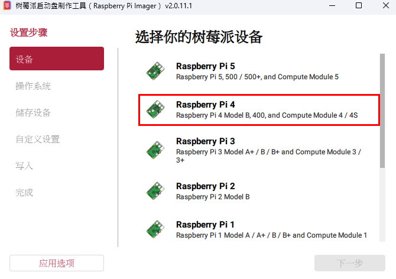
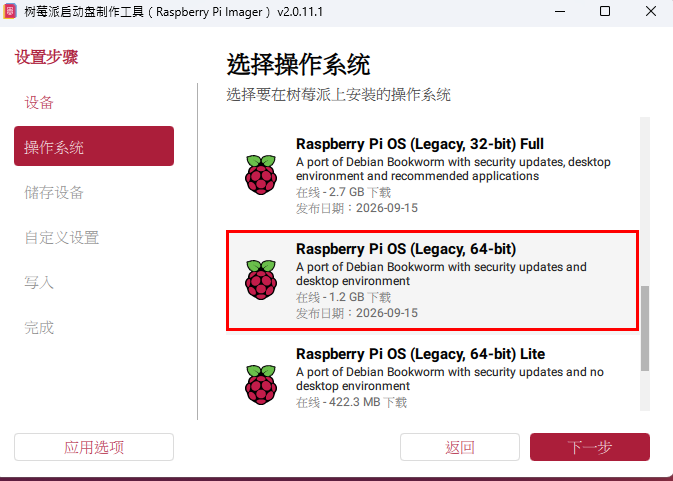
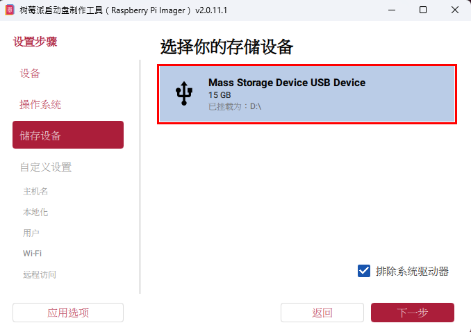
Customisation
Imager then opens Customisation (自定义设置). Go through every page; do not choose Skip customisation (跳过自定义设置).
| Page | What to set |
|---|---|
| Hostname (主机名) | Optional. Keep the default or choose a name you can recognize. |
| Localisation (本地化) | Capital city Taipei (Taiwan), time zone Asia/Taipei, keyboard layout us. |
| User (用户) | Set a username and password. Write them down: you need them for SSH in step 6. |
| Wi-Fi | Optional. The labs connect over Ethernet; enter a network name and password only if you also want WLAN. |
| Remote access (远程访问) | Turn on Enable SSH (开启 SSH) and choose Use password authentication (使用密码登录). |
| Raspberry Pi Connect (树莓派 Connect) | Leave it disabled. |
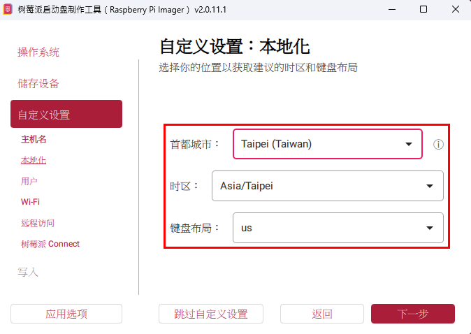
Asia/Taipei, us keyboard.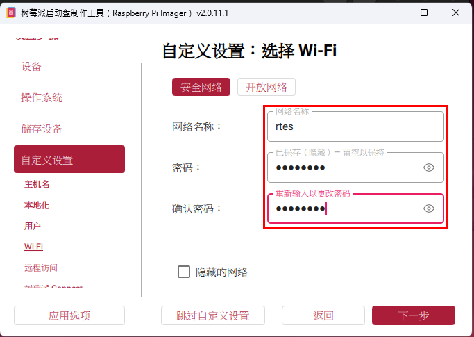
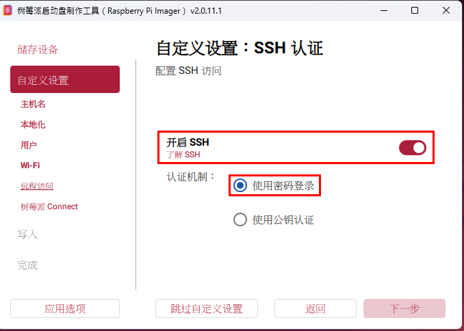
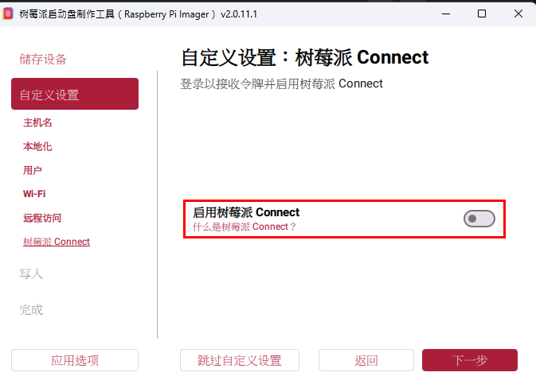
Write the image
On the Write (写入) page, check the summary, confirm the erase prompt, and wait until Imager shows Finished (完成). Do not remove the SD card while Imager is writing or verifying.
4. Configure the Raspberry Pi IP
- After flashing, open the SD card on the host computer.
- Open
cmdline.txt. - Append
ip=<raspberry-pi-ip>to the end of the single command-line row. - Save the file and eject the SD card safely.
- Insert the SD card into the Raspberry Pi.
- Connect Ethernet to the Raspberry Pi, and connect the other end to the computer through a USB Ethernet adapter.
- Power on the Raspberry Pi.

cmdline.txt.Check the indicator lights
The Raspberry Pi has two small lights on the board. On a Raspberry Pi 4 they sit next to the USB-C power port.
- Red (PWR): power.
- Green (ACT): activity. It flickers when the Raspberry Pi reads or writes the SD card.
A normal boot looks like this: the red light turns on and stays on, and the green light flickers irregularly for about 30–60 seconds while the SD card is read, then blinks only occasionally. The first boot takes longer because the Imager settings are applied.
5. Configure VM Network Adapters
The VM needs two network paths: one for Internet access, and one for SSH to the Raspberry Pi through the Ethernet adapter.
- In Ubuntu, open the system menu at the top-right corner and choose Power Off, or run
sudo poweroffin a terminal. - Wait until VirtualBox Manager shows the VM as Powered Off. Do not use Pause or Save State.
- Select the VM and open Settings (設定) → Network (網路).
- Configure Adapter 1 and Adapter 2 as shown below, then choose OK (確定).
Adapter 1: Internet access
On the Adapter 1 (適配器 1) tab, keep Enable Network Adapter checked and set Attached to to NAT. The VM reaches the Internet through the host computer.
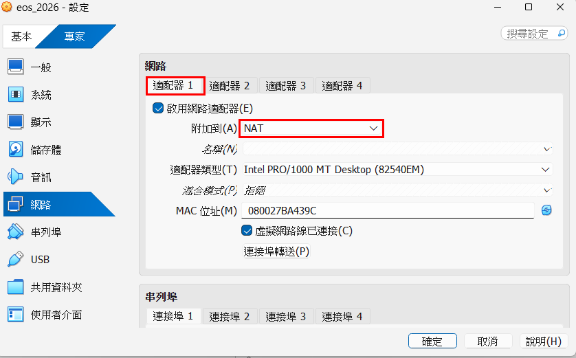
Adapter 2: Raspberry Pi connection
On the Adapter 2 tab, check Enable Network Adapter, set Attached to to Bridged Adapter (橋接適配器), and set Name to the USB Ethernet adapter that is connected to the Raspberry Pi.
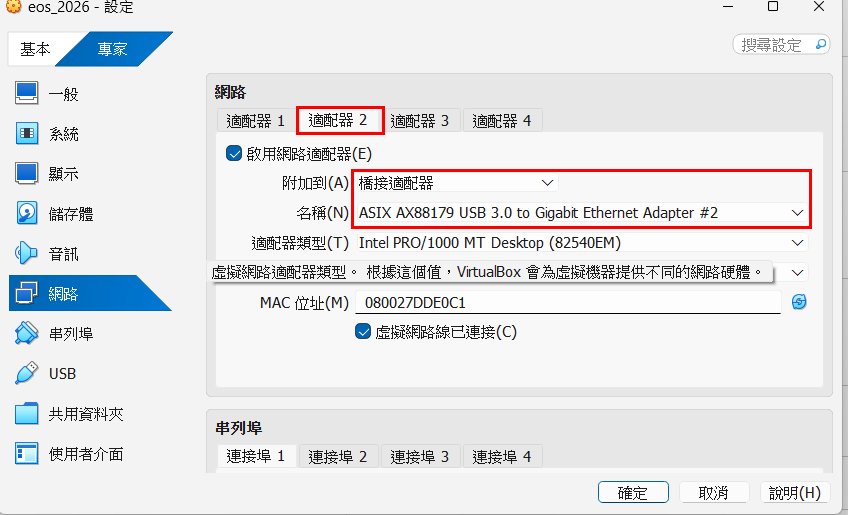
enp0s3 and Adapter 2 (Bridged) appears as enp0s8.
If you are not sure which USB Ethernet adapter to pick, unplug it, reopen
the list, and see which entry disappears.
Test Internet access
Start the VM and test that it can reach the Internet.
ping google.com
Set the VM IP
Configure the Raspberry Pi-facing interface, enp0s8, so its IP
is different from the Raspberry Pi but still in the same subnet.
| Device | Example IP |
|---|---|
| Raspberry Pi | 192.168.222.222 |
Ubuntu VM (enp0s8) |
192.168.222.100 |
- Open Ubuntu Settings → Network.
- Choose the gear button next to Ethernet (enp0s8).
- On the IPv4 tab, choose Manual.
- Enter Address
192.168.222.100and Netmask255.255.255.0. Leave Gateway empty. - Choose Apply.
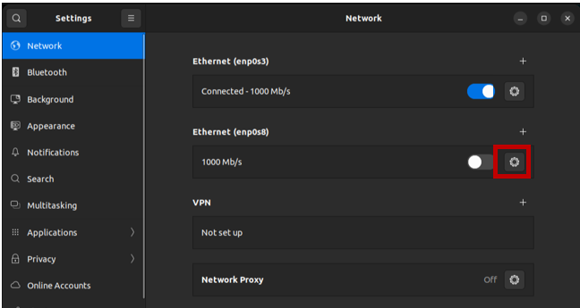
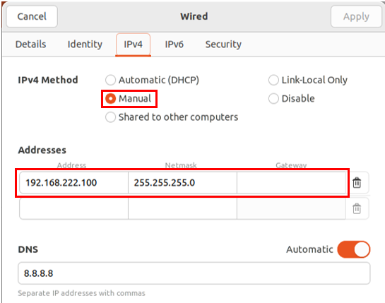
6. SSH to the Raspberry Pi
Open a terminal inside the Ubuntu VM and connect to the Raspberry Pi.
ssh <username>@<raspberry-pi-ip>
Expected results
- The Ubuntu 22.04 LTS VM boots successfully.
- The VM has Internet access.
- The Raspberry Pi's red light stays on and the green light flickers while it boots from the SD card.
- The Raspberry Pi boots Raspberry Pi OS 64-bit.
- The VM and Raspberry Pi have different IP addresses in the same subnet.
- The VM can SSH into the Raspberry Pi.